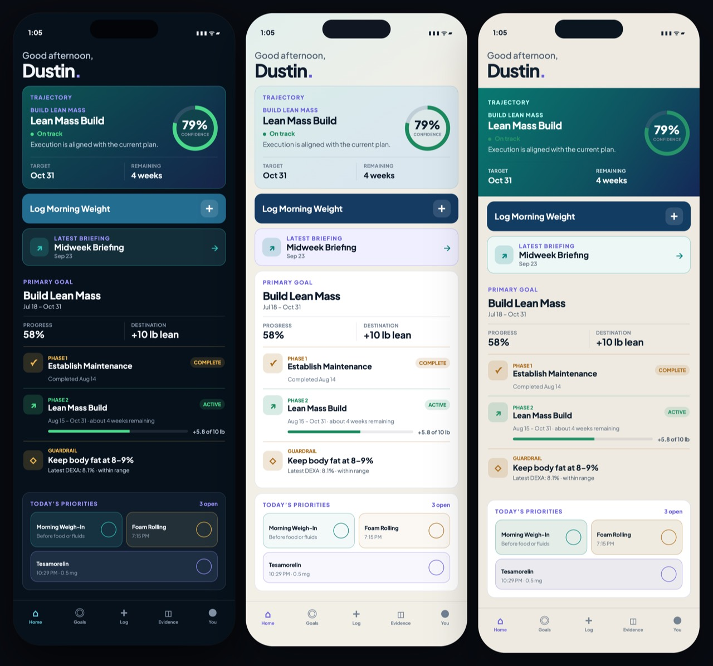
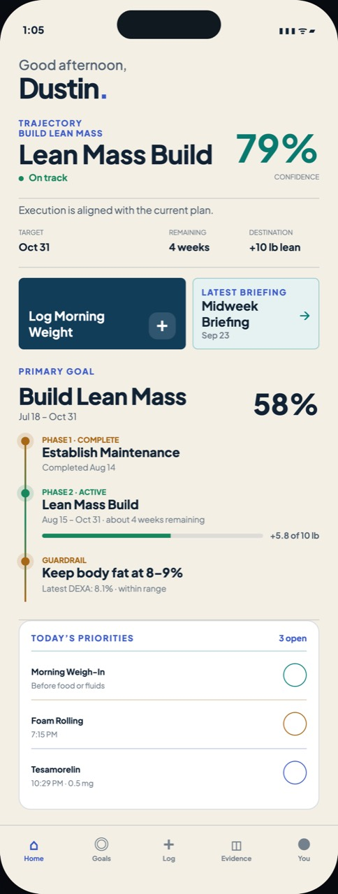
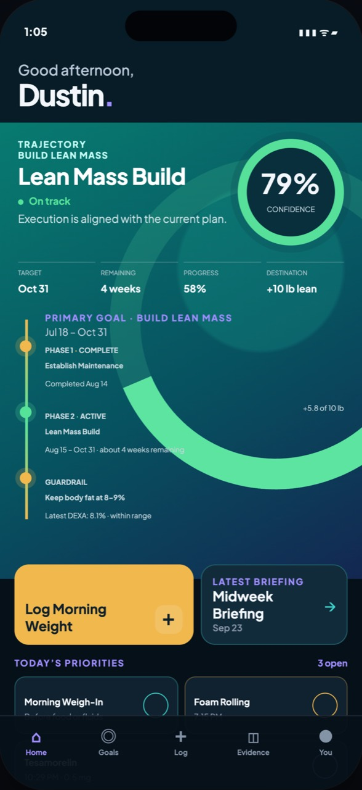

Track 1 exact reference
Locked third/light structure plus dark parity direction.

Three Founder-selected directions advance independently. Track 1 locks the warm-light composition and creates its dark banner counterpart. Track 2 corrects Guardrail semantics with a persistent parallel rail. Track 3 corrects both 79% meters, Phase 2 progress ownership and legibility.
Locked third/light structure plus dark parity direction.

Editorial open canvas; Guardrail treatment corrected in Round 4.

Immersive trajectory; ring, progress ownership, Guardrail and legibility corrected.

The light structure is locked. The dark candidate translates the same edge-to-edge banner, ordering, compact Goal and Priority controls without reverting to a floating hero card.
Light and dark retain the open-canvas typography and two-step journey. Guardrail is now a parallel constraint rail spanning both phases, never a third milestone.
The refined dark candidate is joined by a deliberately mineral light translation that preserves the same spatial geometry. Both use exact 79% foreground and background arcs.